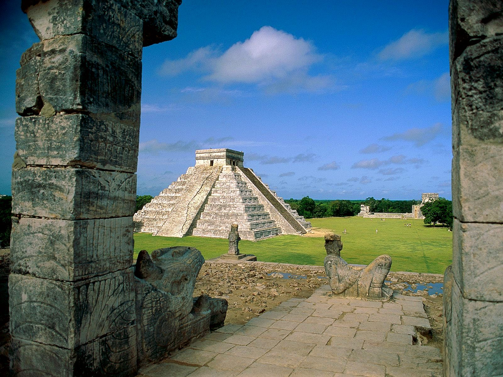

Click here to view more Chichén Itza
Chichen Itza was a large pre-Columbian city built by the Maya people of the Terminal Classic period. The archeological site is located in Tinúm Municipality, Yucatán State, Mexico.
Chichen Itza was one of the most important city-states in pre-Hispanic America and is one of the most visited archaeological sites in Mexico today. The Chichen Itza Pyramid or El Castillo is the most astonishing Mayan Ruin or building inside the Archaeological Site.
Top 3 buildings at Chichen Itza:
- Pirámide de Kukulkán (Kukulkan pyramid)
- El juego de pelota (The Ball Game)
- The Tzompantli
3 things to do near Chichen Itza:
- Balankanche Cave
- The Pink lagoon
- Tulum